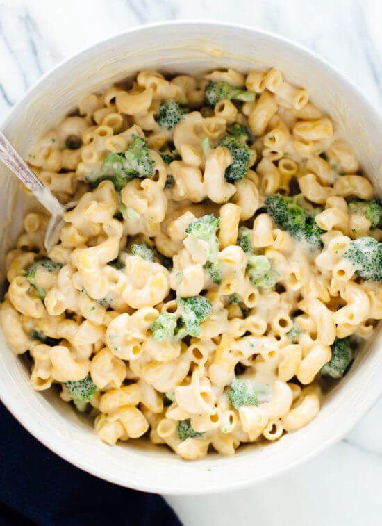

Where did the weekend go? Serious question. I enjoyed a few too many heavy meals over the past few days, so I thought we could lighten up a little with my favorite vegan dinners.
You won’t find any weird meat substitutes here. You’ll find wholesome vegan meals made with protein-rich whole grains, beans, and nuts. You’ll also see plenty of fresh, colorful produce, and occasionally some tofu.
As a vegetarian, a lot of my recipes happen to be vegan, or would be if I simply left off the sprinkle of cheese. I love the challenge of making my favorite cheesy recipes vegan, like when I figured out how to make vegan versions of the lasagna and enchiladas for my cookbook.
If you’re looking to reduce your consumption of animal products, you’re in the right place. I’ve picked out 29 favorite recipes to highlight today. You’ll find lots of comments below proving that even the most adamant carnivores can fall in love with vegan meals!
You can browse my vegan recipe index to see all of my options on Cookie and Kate. For even more, check out my cookbook, Love Real Food, which offers 96 tested vegan/vegan-option recipes. I worked so hard to make the vegan options just as tempting as the originals.
If you make any of these recipes, please let me know how they turn out for you in the comments. I really love hearing from you!

1) Amazing Vegan Mac and Cheese
"I made this at my daughters request and have to admit I was skeptical as we are neither vegan or vegetarian. It was awesome, all three of my children and my wife raved about it, we will definitely be making this again.” – Patrick
Show me the recipes
Older
Next Page